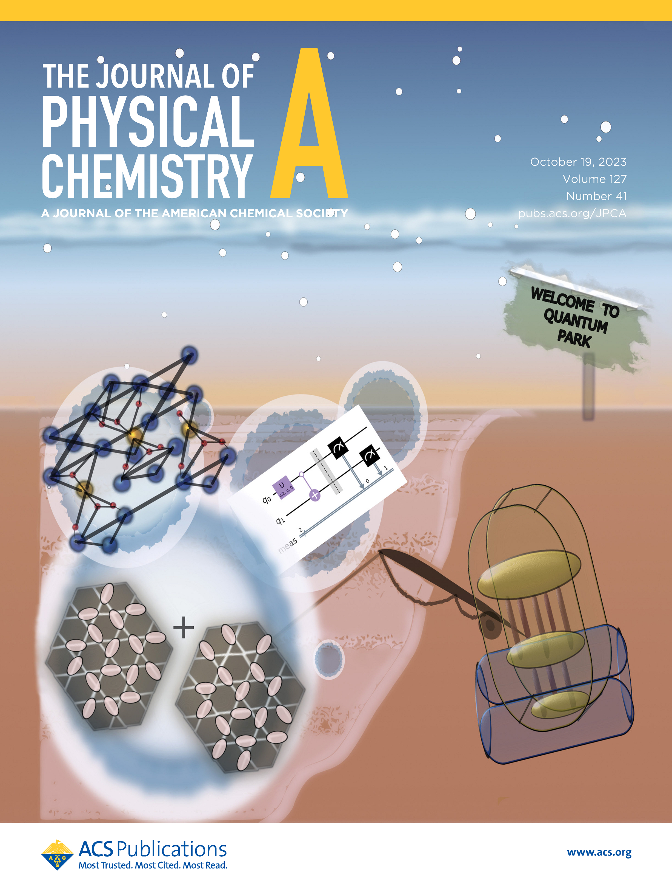

Sabre Kais Group
Quantum Information and Quantum Computation
Quantum Simulation of Resonating Valence Bond States
Spin liquids—an emergent, exotic collective phase of matter—have garnered enormous attention in recent years. While experimentally, many prospective candidates have been proposed and realized, theoretically modeling real materials that display such behavior may pose serious challenges due to the inherently high correlation content of such phases. Over the last few decades, the second quantum revolution has been the harbinger of a novel computational paradigm capable of initiating a foundational evolution in computational physics. In this report, we strive to use the power of the latter to study a prototypical model, a spin-1/2 unit cell of a Kagome antiferromagnet. Extended lattices of such unit cells are known to possess a magnetically disordered spin-liquid ground state. We employ robust classical numerical techniques such as the density-matrix renormalization group (DMRG) to identify the nature of the ground state through a matrix-product-state (MPS) formulation. We subsequently use the gained insight to construct an auxiliary Hamiltonian with reduced measurables and also design an ansatz that is modular and gate-efficient. With robust error-mitigation strategies, we are able to demonstrate that the said ansatz is capable of accurately representing the target ground state even on a real IBMQ backend within 1% accuracy in energy. Since the protocol is linearly scaling O(n) in the number of unit cells, gate requirements, and the number of measurements, it is straightforwardly extendable to larger Kagome lattices that can pave the way for the efficient construction of spin-liquid ground states on a quantum device.
Physics-Inspired Quantum Simulation of Resonating Valence Bond States─A Prototypical Template for a Spin-Liquid Ground State
Manas Sajjan, Rishabh Gupta, Sumit Suresh Kale, Vinit Singh, Keerthi Kumaran, and Sabre Kais
J. Phys. Chem. A 2023, 127, 41, 8751–8764. View PDF
